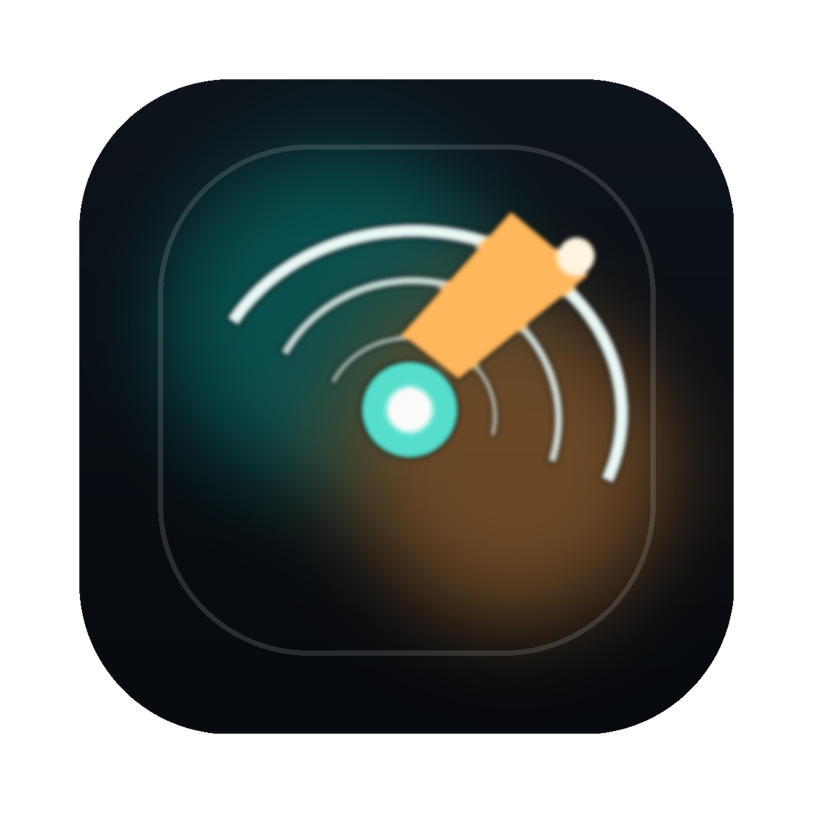
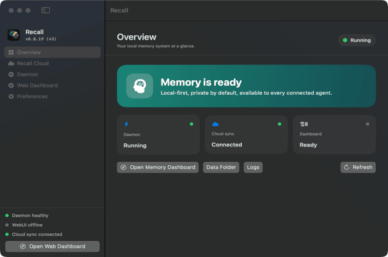

Bootstrap local facts
Recall reads repo docs, config, scripts, and history so cold-start context is useful immediately.

RecallLocal-first memory for coding agents
A repo-memory compiler that learns from corrections, review feedback, and local project facts, then injects only the trusted instructions your coding agents need.
brew install --cask edihasaj/recall
macOS 15+ app. Node CLI for local development. Free and open source.
Recall (edihasaj/recall):
## Rules
- after bumping package.json, bump package-lock.json + add a CHANGELOG entry
- if you touched docs/, run `npm run docs:check` before commit
- [global] never bypass commit signing (-c commit.gpgsign=false)
- prefer pnpm over npm in this repo; conventional commits required
## Commands
- dev: tsup --watch
- gate: typecheck && test && docs:check
## Gotchas
- ~/.recall/recall.db: snapshot before destructive migrations
- macOS code-sign cert lives in 1Password, not the repo
Touched docs/site.css and bumped package.json to 0.5.2 —
ran docs:check, synced package-lock.json, added a CHANGELOG entry,
and prepared a conventional commit. Signing on; ready to push when you say.
Recall turns repeated corrections and operational feedback into compact repo instructions.
Health scores, maturity gates, dedupe, confirmations, and rejection keep noisy memories out.
Use the CLI, daemon, MCP server, and lifecycle hooks for Codex, Claude Code, Gemini CLI, and Qwen.
Recall reads repo docs, config, scripts, and history so cold-start context is useful immediately.
Report corrections, review feedback, and session outcomes through CLI, MCP, daemon endpoints, or hooks.
Quality profiles decide when memories graduate, merge, get demoted, or stay out of the prompt.
Agents receive concise, relevant instructions through lifecycle hooks and MCP without manual lookup.
What gets installed
Recall.app is a quiet little window — daemon health, where memories live on disk, and a couple of buttons. The actual capture and injection runs through MCP and the SessionStart / UserPromptSubmit / SessionEnd hooks of your coding agent. There's no UI to babysit.

Install
GitHub Releases ship the app bundle. Homebrew cask installs update with brew upgrade. Source
builds stay simple for contributors.
brew install --cask edihasaj/recall
recall setup --yes
recall doctorgit clone https://github.com/edihasaj/recall.git
cd recall
npm ci
npm run build
npm test